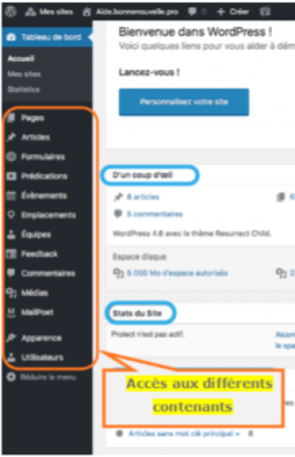

Intégration du contenu rédactionnel
Ajouter du texte simple ou un titre
Pour ajouter du texte (ou autres éléments) cliquer sur "Ajouter un élément" dans votre page, puis choisir l'élément que vous voulez ajouter, ici "Texte" ou "Titre" ou même "Texte avec image".
Ajouter du texte ou un titre sur une page
Consignes
Copier-coller le texte que vous avez préparé dans les différentes rubriques ou sous-rubriques.
Vous pouvez ensuite modifier rapidement vos différents éléments textuels en allant dans le menu Tableau de bord=>Apparence.
